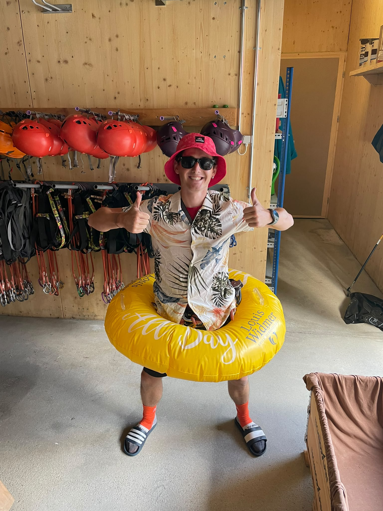

NorthLine 2.0 · 2026
START
NorthLine 2.0 · 2026
NorthLine 2.0
CROSSING SWITZERLAND. ONE STEP AT A TIME.
From Bargen in the north to Chiasso in the south. Around 300 kilometres across Switzerland, alone and without a support car.
BARGEN → CHIASSO
NORTH → SOUTH
THE ATHLETE
The person behind NorthLine 2.0

Damiano Zanoni
ENDURANCE · CURIOSITY · LEARNING
My name is Damiano Zanoni. I have always been drawn to long distances, mountains and challenges that force me to discover what I am capable of. For me, endurance is not simply about resisting pain or collecting kilometres. It is about staying clear-minded when the body is tired, accepting uncertainty and continuing to learn while moving forward.
The first NorthLine did not end the way I had imagined. I started in Chiasso with the goal of crossing Switzerland from south to north, but my attempt failed before I reached Bargen. It was difficult to accept, yet it taught me more than a successful crossing probably could have. I learned that determination is essential, but it cannot replace a sustainable strategy.
With NorthLine 2.0, I am not trying to erase that failure or pretend it never happened. I am returning to the challenge with a different approach: better control of my pace, more respect for recovery and greater attention to the decisions that can determine the entire journey. This time, I want to reach Chiasso not simply by pushing harder, but by moving smarter.
ONE COUNTRY. ONE DIRECTION.
A familiar route. A journey I have never made.
Reversing the route changes more than its direction on the map. The climbs arrive in a different order, familiar places reveal another side, and memories from the first attempt can help me—or mislead me. I know parts of this line, but I cannot treat experience as a script.
WHY NorthLine 2.0?
The real challenge begins when the plan stops working.
Without a support car, every inconvenience becomes part of the route. A dead battery, a missed shop, wet equipment or a poor decision cannot be handed to somebody else. I have to solve the problem, absorb the lost time and decide how to continue. That is where NorthLine 2.0 truly begins.
KEEP MOVING SOUTH.
THE CHALLENGE
What is NorthLine 2.0?
NorthLine 2.0 is my return to an unfinished crossing. I start in Bargen and head south towards Chiasso, crossing the same country in the opposite direction—this time without a support vehicle or a prepared answer for every change.
Everything I need—food, equipment, navigation, power and recovery—has to work together while I keep moving. Independence is not the theme of the journey; it is the condition that makes it possible.
I cannot know in advance exactly how each day will unfold. I can only prepare well enough to make good decisions when fatigue, weather or an unexpected problem changes what comes next.
Through the live platform, I share the crossing as it happens: my current position, the completed track, live statistics and notes from the route.
Reaching Chiasso matters, but so does how I get there. For me, success means making the entire north-to-south crossing work as one continuous, self-supported journey.
THE CHALLENGE
The map counts kilometres. It misses everything else.
The first kilometres test my legs. The later ones test every decision that came before.
A climb is never just height gained; it changes my pace, my appetite and what remains for the hours ahead.
A forecast is only a starting point. On the route, heat, rain and cold decide what is still possible.
Recovery is not a separate phase. It has to happen while the clock and the journey keep moving.
A wrong turn costs more than distance: it spends time, energy and confidence.
There is nobody to absorb a mistake for me. I make the call, carry the consequence and choose what happens next.
UNTIL THE NorthLine 2.0.
BARGEN → CHIASSO
NORTH → SOUTH
FOLLOW THE JOURNEY